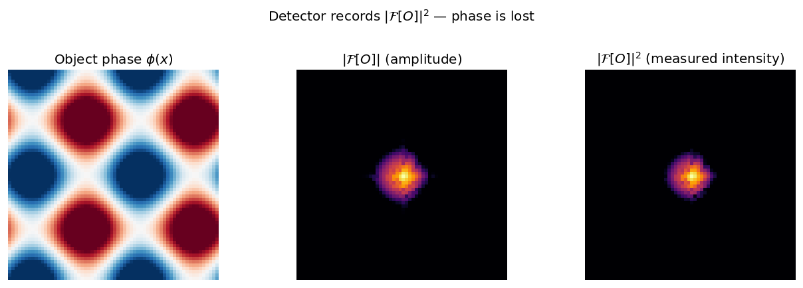
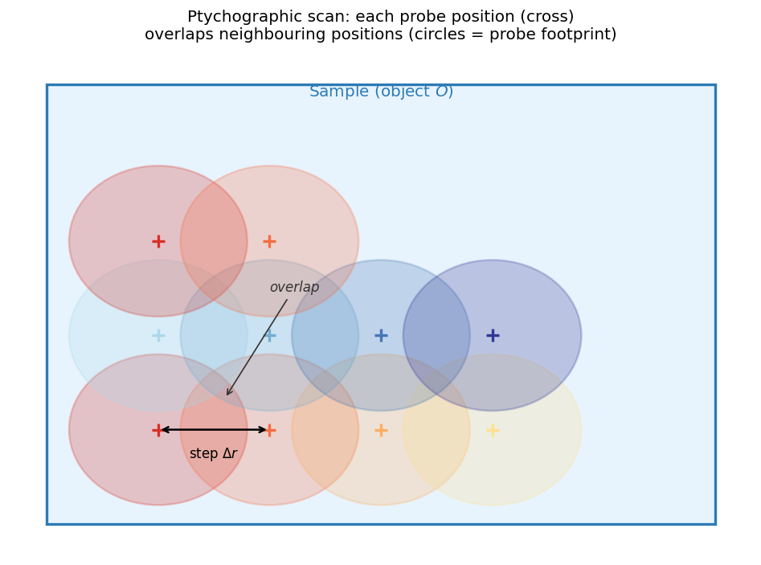
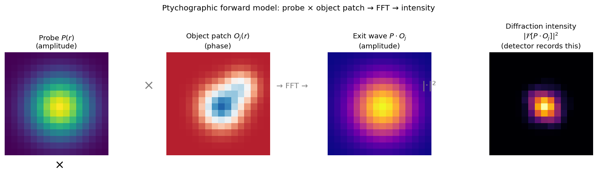
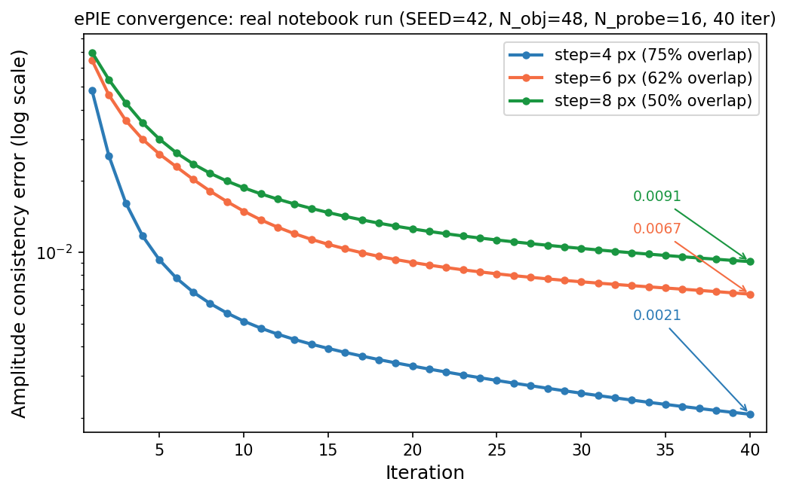
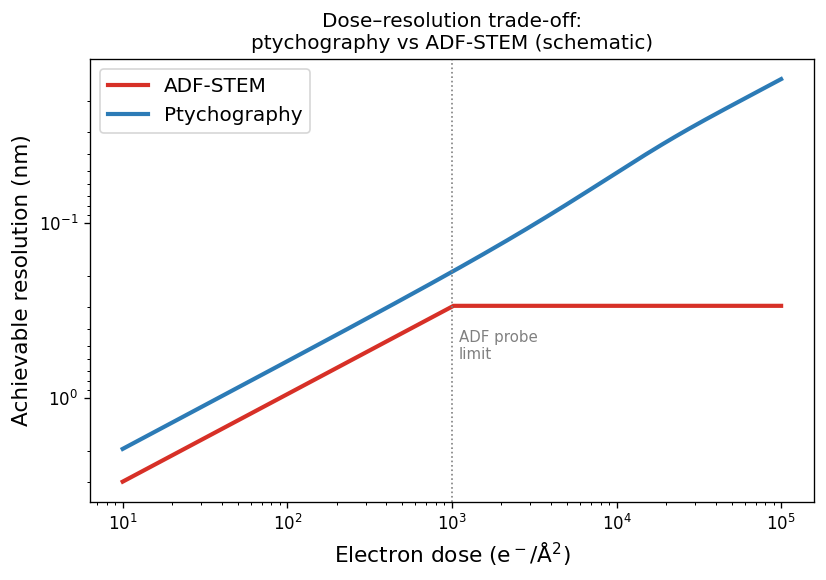
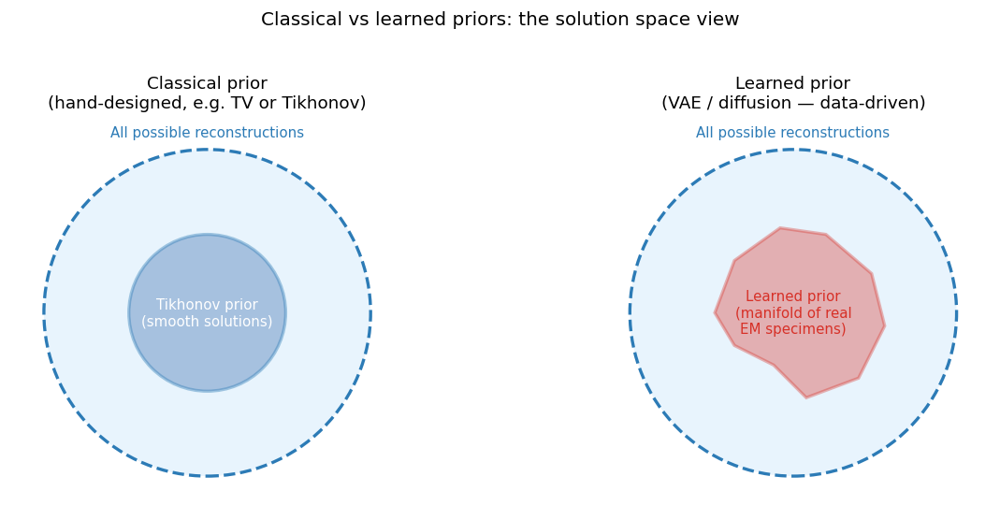
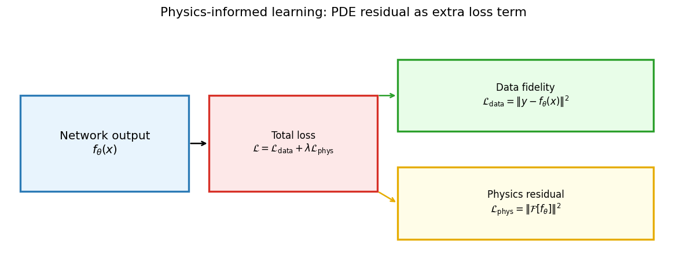
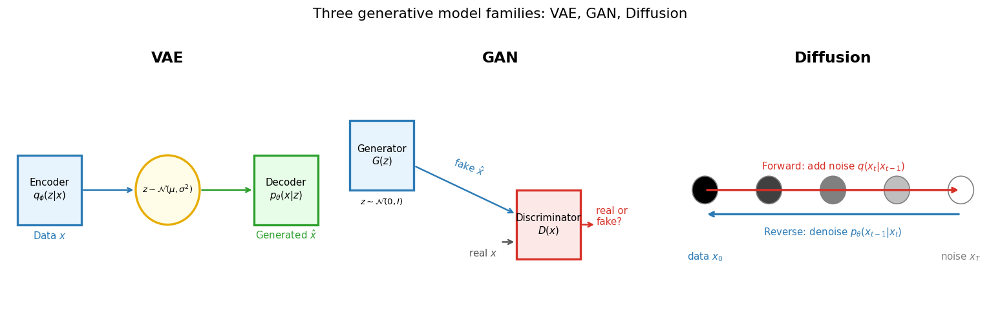
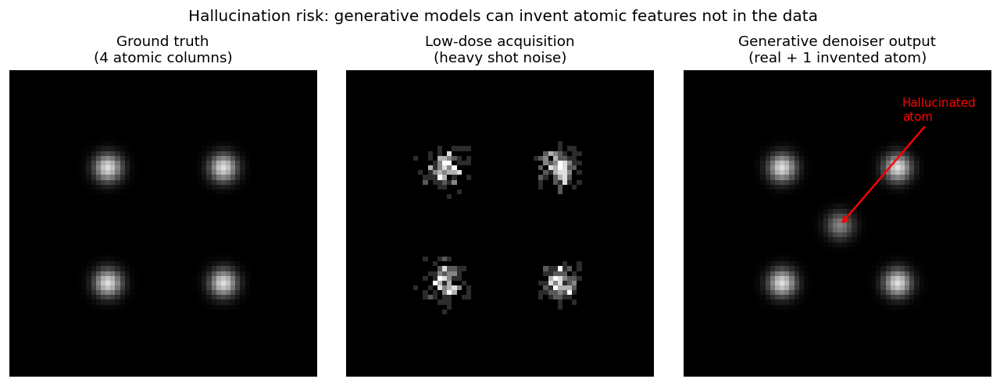
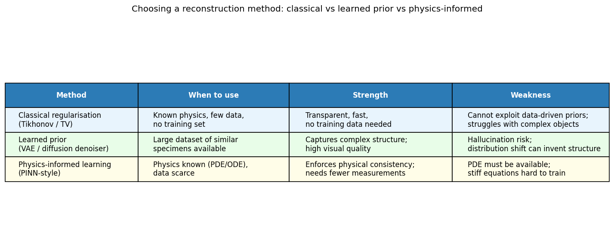

Data Science for Electron Microscopy
Week 12: Imaging inverse problems II — ptychography, physics-informed & generative
FAU Erlangen-Nürnberg
Institute of Micro- and Nanostructure Research


Recap: Week 11 and today’s question
- Week 11 recap: every EM measurement follows \(y = Hx + \epsilon\); inversion is hard because \(H\) is rank-deficient (non-uniqueness) and noise is amplified (instability). Tikhonov and TV regularisation are hand-designed priors that stabilise inversion at the cost of some smoothing bias.
- The Week 11 gap: hand-designed priors are general but know nothing about what real EM specimens look like. Can we do better with more powerful priors?
- Today’s answer — three upgrades:
- Ptychography: overlapping probe positions make the forward model over-determined, giving unique, stable phase retrieval without strong regularisation.
- Physics-informed learning: put the physics residual directly in the loss — a “soft prior” enforcing known equations.
- Generative models (VAE / GAN / diffusion): learn a prior from data — the solution lives on a manifold of real EM specimens — and use it to regularise reconstruction.
- Honest caveat (threading through today): more powerful priors carry more risk. A generative prior can invent atomic structure not in the data — hallucination. We will be explicit about when to trust each method.
Road map and self-study
- Road map: recap + roadmap (2) · the phase problem: detectors measure \(|A|^2\), phase is lost (3) · ptychography: overlapping probes + ePIE + convergence (4) · ptychography payoff + practice (4) · from hand-built to learned/physics priors (3) · physics-informed learning: PDE residual in the loss (5) · generative models as learned priors — VAE/GAN/diffusion (4) · generative models for EM — super-res/denoising/microstructure (4) · the honest risks + uncertainty quantification (5) · choosing a method (2) · synthesis + forward link Week 13 (2) — 38 content slides + Continue + References (40 total).
- Self-study:
notebooks/week12_ptychography_forward.ipynb— build a synthetic complex object and probe; implement the forward model (\(P \cdot O_j \to \text{FFT} \to |\cdot|\)); run ePIE phase retrieval over 40 iterations (amplitude-consistency error: 0.0991 → 0.0021, ~48× improvement); exercise: change step size (step=4, 6, 8 px, overlaps 75%/62%/50%) and verify more overlap → lower final error (0.0021, 0.0067, 0.0091 respectively).
Why phase matters in EM
- What detectors measure: every detector — CCD, direct electron detector, HAADF annular — records electron intensity: the number of electrons hitting each pixel. Intensity \(= |\psi|^2\).
- What is lost: the electron wave \(\psi = |\psi|\,e^{i\phi}\) carries both amplitude and phase. The detector measures \(|\psi|^2\) — the amplitude squared. The phase \(\phi\) is discarded by the measurement process.
- Why this matters: in a thin crystalline specimen, the amplitude \(|\psi|\) is nearly uniform — the specimen is nearly transparent. All the structural information (which column is where, how thick the sample is, what the projected potential is) is encoded in the phase \(\phi\).
- Consequence: a conventional image of a thin specimen looks featureless, even when real atomic-scale structure exists. Recovering the phase from intensity measurements is the phase problem.
The phase problem: a picture

Left: the object phase \(\phi(x)\) varies across the specimen — this is the structural information. Centre: the Fourier-domain amplitude \(|\mathcal{F}[O]|\) retains spatial-frequency magnitudes but discards phase. Right: the detector records only \(|\mathcal{F}[O]|^2\) — the phase information is gone.
Overcoming the phase problem: redundancy is the key
- Single diffraction pattern: \(N^2\) measured intensities for \(N^2\) complex unknowns (\(2N^2\) real DOF) — under-determined. Infinitely many objects are consistent with one diffraction pattern.
- Ptychographic scanning: move the probe by a step smaller than the probe size. Each new position adds \(N_p^2\) new measurements while sharing \(N_p^2\) unknowns with the previous position. With enough overlap, the system becomes massively over-determined.
- Concrete numbers: a 64×64 scan with a 64×64 probe gives \(64^2 \times 64^2 = 16.7\text{ M}\) measurements for a \(64^2 = 4096\)-unknown object — over-determined by ~4000×. Rodenburg, John M. et al., (2007), doi:10.1103/PhysRevLett.98.034801
- Result: the phase problem is solved by redundancy. The phase can be uniquely recovered from the magnitudes alone — no separate phase measurement needed.
Ptychography: overlapping probe positions

Schematic of a ptychographic scan: each cross marks a probe centre (scan position); coloured circles show the probe footprint. Adjacent probes overlap significantly. This overlap means each point in the object (grey rectangle) is illuminated by multiple probe positions — providing redundant constraints that enable unique phase recovery.
The ptychographic forward model

The four steps of the ptychographic forward model at one scan position \(j\): (1) crop the object patch \(O_j(r)\); (2) multiply by the probe \(P(r)\) to form the exit wave \(P \cdot O_j\); (3) FFT to far-field; (4) take \(|\cdot|^2\) to get the measured intensity. Steps 1–3 are reversible; step 4 is not — phase is lost.
Iterative phase retrieval: ePIE intuition
- The core idea: alternate between enforcing two constraints.
- Fourier constraint: the reconstructed exit wave’s Fourier amplitude must match the measured \(\sqrt{I_j}\). Replace amplitude, keep phase.
- Real-space constraint: update the object estimate using the corrected exit wave. Propagate the correction back.
- One ePIE iteration at position \(j\):
- Predict: \(\psi_j = P \cdot O_j\) → \(F_j = \mathcal{F}[\psi_j]\)
- Replace amplitude: \(F_j^* = \sqrt{I_j^{\text{meas}}} \cdot e^{i\arg F_j}\)
- Back-propagate: \(\psi_j^* = \mathcal{F}^{-1}[F_j^*]\)
- Update object: \(O_j \leftarrow O_j + \beta \frac{P^*}{|P|^2_{\max}}(\psi_j^* - \psi_j)\)
- Convergence: after many iterations over all positions, \(O\) converges to the reconstruction. Maiden, Andrew M. et al., (2009), doi:10.1016/j.ultramic.2009.05.012
ePIE convergence: error vs iteration

ePIE amplitude-consistency error vs iteration — actual output of week12_ptychography_forward.ipynb (SEED=42, N_obj=48, N_probe=16, 40 iterations). Three probe step sizes shown on a log-y axis: step=4 px (75% overlap) converges to 0.0021 (~48× improvement over flat-phase start); step=6 px (62%) to 0.0067 (~16×); step=8 px (50%) to 0.0091 (~11×). All three curves are monotone. Higher overlap yields lower final error, demonstrating that ptychographic redundancy drives reconstruction accuracy.
What ptychography buys: dose–resolution trade-off

Schematic dose–resolution trade-off for ADF-STEM (red) and ptychography (blue). Note: the y-axis is inverted — higher position means finer resolution (smaller nm value). In the low-dose regime both scale as \(d \propto 1/\sqrt{\text{dose}}\), but ptychography achieves ~2× better resolution at the same dose. In the high-dose regime, ADF resolution saturates at the probe-size limit; ptychographic resolution continues to improve because the over-determined system exploits information across the full diffraction pattern. Chen, Zhen et al., (2021), doi:10.1126/science.abg2533
Ptychography: scan step size and experimental parameters
- Step size controls the overlap fraction: smaller step → more overlap → better reconstruction → more dose (more positions → more total exposure at same probe current).
- Optimal step: roughly 20–40% of the probe diameter. Too small: excessive dose and computational cost. Too large: insufficient constraints → poor convergence. Chen, Zhen et al., (2021), doi:10.1126/science.abg2533
- Detector considerations: the 2D detector must Nyquist-sample the diffraction pattern. Under-sampling aliases high-frequency structure — a known artefact. The camera length sets the detector angular range vs real-space field of view.
- Probe coherence: partial coherence (mixed states) and probe vibration degrade reconstruction quality. These are modelled as “mixed-state” ptychography: \(I_j = \sum_k |\mathcal{F}[P_k \cdot O_j]|^2\) over incoherent probe modes.
Ptychographic resolution records in STEM
- 2021, Chen et al. (Science): MoS\(_2\) at 0.39 Å resolution — below the probe size by a factor of ~2. The reconstruction beats hardware limits by using the full 2D diffraction data. Chen, Zhen et al., (2021), doi:10.1126/science.abg2533
- Spatial resolution vs dose: in the beam-sensitive regime (dose < ~10\(^3\) e⁻/Ų), ptychography achieves 2–3× better resolution than ADF at equal dose — directly translating to more information per electron.
- Phase sensitivity: phase shifts as small as \(10^{-3}\) rad can be detected in ideal conditions — sufficient to image light atoms (H, Li, O) in an all-heavy-atom matrix, which is essentially impossible with HAADF.
- EM implication: ptychography does not require hardware upgrades to improve resolution — it uses existing electron doses more efficiently. It is a software upgrade that changes what is possible.
Ptychographic phase contrast in practice
- What an EM experimentalist must specify:
- Probe size (aberration corrector settings or defocus)
- Scan step size (usually 20–40% of probe diameter)
- Camera length (sets detector angular range vs real-space pixel size)
- Dose (total electrons / Ų)
- What ptychographic software returns:
- Complex transmission function \(O(\mathbf{r})\) — amplitude and phase maps
- Reconstructed probe \(P(\mathbf{r})\) (in modern “blind ptychography”)
- Quality check: plot the amplitude-consistency error vs iteration. If it decreases smoothly to < 5% of its initial value, the reconstruction is converged. If it plateaus above 10%, something is wrong (insufficient overlap, detector saturation, too few positions). Maiden, Andrew M. et al., (2009), doi:10.1016/j.ultramic.2009.05.012
From hand-built regularisers to learned priors
- Week 11 recap — the regularised objective: \[\hat{x} = \arg\min_x \|Hx - y\|^2 + \lambda R(x)\]
- The prior \(R(x)\) encodes what a “reasonable” object looks like:
- Tikhonov (\(R = \|\nabla x\|_2^2\)): smooth objects — works for diffuse phase maps.
- TV (\(R = \|\nabla x\|_1\)): piecewise-constant objects — works for atomic columns.
- Both are hand-designed and know nothing about real EM specimens.
- The learning opportunity: we have millions of simulated or experimental EM images. What if we learn a prior directly from data?
- Two complementary upgrades today:
- Physics-informed: replace the hand-crafted prior with a known PDE/ODE residual. Physics goes into the loss.
- Generative model: replace the hand-crafted prior with a neural network trained on real EM images. The prior is learned from data.
The plug-and-play framework: any denoiser as a prior
- Insight: the proximal operator of a regulariser \(R(x)\) has the same mathematical form as Gaussian denoising. Kamilov, Ulugbek S. et al., (2023), doi:10.1109/MSP.2022.3199595
- Plug-and-play (PnP) principle: replace the hand-crafted denoiser in the ADMM / gradient-descent loop with any powerful denoiser — a BM3D, a DnCNN, or a diffusion model.
- Algorithm: iteratively alternate between:
- Data step: \(x \leftarrow x - \alpha \nabla_x \|Hx - y\|^2\) (gradient on data term)
- Prior step: \(x \leftarrow \text{Denoiser}(x, \sigma)\) (apply the learned prior)
- Result: the denoiser implicitly defines the prior \(R(x)\) without needing to write it down explicitly. Any improvement in the denoiser directly improves the reconstruction.
The landscape of modern priors

Left: a classical hand-designed prior confines solutions to a geometrically simple set (e.g., the smooth-function ball for Tikhonov). Right: a learned prior confines solutions to an irregular manifold shaped by the training data — capturing the real distribution of EM specimens. Learned priors are more accurate for real specimens but more dangerous when the specimen is out of distribution.
Physics-informed learning: the key idea
- Week 11 approach: \(R(x) = \|\nabla x\|^2\) (smoothness) or \(R(x) = \|\nabla x\|_1\) (TV). These know nothing about the physical law governing the specimen.
- Physics-informed approach: if we know a governing equation — a PDE, a scattering model, a conservation law — we can add its residual to the loss. Raissi, Maziar et al., (2019), doi:10.1016/j.jcp.2018.10.045
- General physics-informed loss: \[\mathcal{L} = \underbrace{\|y - f_\theta(x)\|^2}_{\text{data fidelity}} + \lambda \underbrace{\|\mathcal{F}[f_\theta]\|^2}_{\text{physics residual}}\] where \(\mathcal{F}[\cdot]\) is the physical operator (e.g., the PDE evaluated at the network output).
- EM interpretation: “data fidelity” = reconstruction matches measurements; “physics residual” = reconstruction obeys a known physical law.
Physics-informed loss: schematic

The physics-informed loss decomposes into two terms: (green) data fidelity — the network output must match the measured data; (yellow) physics residual — the network output must satisfy a known physical operator \(\mathcal{F}[f_\theta]\). The balance \(\lambda\) controls the trade-off. Both terms are differentiable → backpropagation works end-to-end.
Physics-informed EM: concrete examples
- Scattering-constrained ptychography: the reconstruction is penalised for violating the weak-phase-object constraint (\(|O| \approx 1\)) or the multislice propagation equations. This removes unphysical solutions that fit the measurements but violate known electron optics.
- Charge-density reconstruction: the electrostatic potential \(V(r)\) satisfies Poisson’s equation \(\nabla^2 V = -\rho/\epsilon_0\). Adding this as a soft constraint during ptychographic reconstruction improves the recovered charge density map.
- Diffuse-scattering model: for amorphous materials, the power spectrum of the reconstructed object should follow a known form (Ornstein–Zernike for liquids). Adding this as a spectral prior constrains the reconstruction without a single known atomic position.
- Key point: the “physics residual” can be any computable function of the reconstruction. It does not need to be a classical PDE — any physical law, symmetry, or conservation equation is valid.
Physics-informed vs classical regularisation: trade-offs
- Advantage over Tikhonov/TV: physics-informed priors can encode arbitrary physical laws, not just smoothness or sparsity. The reconstruction is physically self-consistent — it satisfies known equations by construction.
- Disadvantage vs Tikhonov/TV: the physics model must be available and accurate. If the model is wrong (wrong symmetry, wrong approximation), the physics residual pushes the reconstruction toward the wrong answer. Tikhonov/TV have no such model-mismatch failure mode.
- Disadvantage vs generative priors: physics-informed reconstruction cannot capture fine details of the real data distribution (e.g., defect morphologies, grain boundaries). It only knows what the physics says, not what real specimens look like.
- When to use physics-informed: when the governing equation is known and accurate, data is limited (few measurements), and the phenomenon is described by a well-understood physical law. Ideal for: clean crystals with known symmetry, electrostatic measurements, defined diffraction geometry.
Physics-informed learning: summary
- Core idea: add any computable physical constraint as a term \(\lambda \|\mathcal{F}[f_\theta]\|^2\) in the reconstruction loss. Differentiability enables end-to-end backpropagation.
- EM position: physics-informed reconstruction sits between classical regularisation (no data, all physics) and learned priors (all data, no explicit physics). It is the right choice when physics is known and data is limited.
- Key risk: model mismatch — wrong physics pushes the reconstruction in the wrong direction. Always validate the physics assumption explicitly.
- Forward link: generative priors (next) know nothing about the physics but everything about what real EM specimens look like. The two approaches are complementary and can be combined.
Generative models as learned priors: overview

Three generative model families. VAE (left): encoder maps data to a structured latent \(z\sim\mathcal{N}(\mu,\sigma^2)\); decoder samples new data from the latent. GAN (centre): generator \(G(z)\) fools a discriminator \(D(x)\) into classifying fake data as real. Diffusion (right): forward process adds noise step-by-step; a neural network learns the reverse denoising.
VAE: probabilistic latent space as a prior
- Autoencoder recap (Week 8): encode \(x \to z\), decode \(z \to \hat{x}\). Latent \(z\) has no guaranteed structure — sampling fails.
- VAE fix: the encoder outputs a distribution \(q_\phi(z|x) = \mathcal{N}(\mu_\phi(x), \sigma_\phi^2(x))\). Training maximises the ELBO: \(\mathcal{L}_{\text{ELBO}} = \mathbb{E}[\log p_\theta(x|z)] - D_{\text{KL}}(q_\phi(z|x) \| \mathcal{N}(0,I))\). Kingma, Diederik P. et al., (2013)
- The KL term regularises the latent: it pushes \(q_\phi(z|x)\) toward \(\mathcal{N}(0,I)\) — so the latent space is smooth, structured, and can be sampled from.
- As a prior for EM reconstruction: any point in the latent space decodes to a plausible EM image. Reconstruction becomes: “find the latent code \(z\) such that \(\text{decode}(z)\) is consistent with measurements.” The search is now over a smooth, structured latent — not the full image space.
GAN: adversarial prior for sharp images
- GAN structure: two networks train in opposition. Goodfellow, Ian et al., (2014)
- Generator \(G(z)\): maps noise \(z \sim \mathcal{N}(0,I)\) to a synthetic image.
- Discriminator \(D(x)\): classifies whether \(x\) is real (from training data) or fake (from \(G\)).
- Training objective: \(G\) wants to fool \(D\); \(D\) wants to detect fakes. At Nash equilibrium, \(G\) produces samples indistinguishable from real data.
- As an EM prior: train \(G\) on real EM images of a given material class. Then in reconstruction: find \(z\) such that \(G(z)\) is consistent with measurements \(y\).
- GAN advantage: much sharper, more realistic images than VAE — the adversarial loss penalises blurriness.
- GAN risk: mode collapse — \(G\) may learn to produce only a few stereotyped images. The reconstructed “atom” may look perfect but be a projection of the training mode, not the actual specimen.
Diffusion models: denoising as a prior
- Forward (noising) process: starting from a clean image \(x_0\), add Gaussian noise at each step until \(x_T \approx \mathcal{N}(0,I)\). This process is fixed and known analytically. Ho, Jonathan et al., (2020)
- Reverse (denoising) process: a neural network \(\epsilon_\theta(x_t, t)\) learns to predict the noise added at step \(t\). After training, reverse diffusion generates new images by starting from noise and iteratively denoising.
- As an EM prior: “solve for \(x_0\) consistent with measurements \(y\), guided by the reverse diffusion process.” Diffusion-based reconstruction alternates between: (1) reverse diffusion step, and (2) projection onto the measurement-consistent set.
- Key advantages: diversity (samples many different solutions, not just one), very high perceptual quality, no mode collapse.
- Key disadvantage: slow — 100–1000 denoising steps per reconstruction, vs one forward pass for a VAE. Also: hallucination risk is the highest of all three (most powerful prior = most room to invent structure).
Generative models for EM: the applications
- Three main applications in EM:
- Super-resolution: take a low-dose, low-resolution scan and produce a high-resolution reconstruction consistent with the data. The generative model fills in the missing high-frequency structure.
- Denoising: take a noisy image and produce a clean reconstruction. The generative model replaces shot noise with structure from the training distribution.
- Microstructure generation: synthesise realistic EM images of a material class for training data augmentation or design space exploration.
- What makes EM hard: the atomic scale is small (sub-Å), the noise is Poisson (count-dependent), and the structures are crystallographically constrained (not arbitrary). All three are learnable if the training data covers the relevant distribution.
GAN for EM super-resolution: concept
- Setup: train a GAN with a low-resolution image as input to the generator and the high-resolution ground truth as the real data for the discriminator.
- The generator learns: “given this blurry, noisy image, what high-resolution image is most consistent with it AND looks like a real EM image?”
- The discriminator learns: “can I tell the difference between a real high-resolution EM image and one the generator produced from a noisy input?”
- Result at equilibrium: the generator produces sharp, high-resolution reconstructions that are indistinguishable from real data — in the training distribution.
- The boundary condition: the key phrase is “in the training distribution.” If the test specimen has a defect type, orientation, or element not in the training data, the GAN will generate the closest thing it knows — which may be wrong.
Diffusion model for EM denoising: concept
- Setup: train a diffusion model on pairs of (noisy, clean) EM images, or self-supervised on noisy images alone (Noise2Void / blind-spot approach). At inference, run the reverse diffusion conditioned on the noisy measurement.
- What it does: denoising diffusion models iteratively remove noise while conditioning on the measurement, converging to a clean image that is: (1) consistent with the noisy input, and (2) looks like a sample from the training data distribution.
- Diffusion denoising vs BM3D/NLM: classical denoisers (BM3D, non-local means) use hand-crafted patch similarity. Diffusion denoisers use learned similarity — they know what atomic columns look like, not just what “similar patches” look like. Result: much better preservation of atomic contrast at extreme noise levels.
- The risk: extreme denoising (very low dose) = very noisy input = the diffusion model has a lot of creative freedom. It may produce a clean-looking image that is completely wrong.
Microstructure generation: VAE for EM data exploration
- Application: use a VAE or rVAE trained on STEM images to explore order parameters and dynamic processes in disordered systems.
- Workflow: train the VAE on a time-series of STEM frames during e-beam-induced dynamics. The latent space organises frames by structural similarity — nearby latent codes correspond to similar atomic configurations.
- What you get: a low-dimensional map of the structural evolution, identifying distinct phases, transitions, and rare events without manual labelling.
- Kalinin et al. (2021): rotationally invariant VAE (rVAE) on graphene dynamics — recovered the order parameter for e-beam-induced carbon reconfiguration and tracked its evolution frame-by-frame.
- Key insight: the VAE does not know physics — it finds the low-dimensional structure in the data. This is unsupervised discovery of physical order parameters from high-dimensional EM observations.
The honest risks: hallucination in EM

Hallucination risk: a low-dose HAADF image (centre) has four real atomic columns with heavy shot noise. A generative denoiser (right) recovers the four true columns but also invents a fifth (red arrow) in the centre — a feature with no ground-truth basis (left). This is the hallucination failure mode: the model’s learned prior places a plausible atom at the centre because it “looks like” an atom should be there, not because the data supports it.
Distribution shift: when the training data does not match the specimen
- Distribution shift: the generative model was trained on specimens from distribution \(p_{\text{train}}\). The test specimen comes from \(p_{\text{test}} \neq p_{\text{train}}\).
- EM examples:
- GAN trained on perfect SrTiO\(_3\) applied to a SrTiO\(_3\) specimen with a grain boundary → grain boundary erased.
- VAE trained on Au nanoparticles applied to a Pt-Au alloy → Pt columns reconstructed as Au.
- Diffusion model trained on room-temperature images applied to a cryogenic sample → ice contamination reconstructed as carbon contamination.
- How to detect: compare the residual (measurement − forward model(reconstruction)) to the expected Poisson noise. If the residual has systematic structure, the reconstruction is wrong.
- Mitigation: train on a diverse dataset, including out-of-distribution examples; report uncertainty estimates; always show the residual map alongside the reconstruction.
When NOT to trust a generative reconstruction
- Red flags — treat the output with extreme caution:
- Dose is very low (\(< 10^2\) e⁻/Ų) and the reconstruction looks suspiciously perfect (no noise).
- You see a feature (defect, interface, precipitate) not present in the training data.
- The residual map shows systematic patterns — the reconstruction does not fit the measurement statistics.
- The reconstructed feature would be the most important result in your paper — validate it independently.
- Green flags — higher confidence:
- The reconstruction is consistent across multiple noise seeds (ensemble agreement).
- The residual is consistent with the expected noise model (Poisson at low dose).
- The key features were also visible in a high-dose reference image.
- A physics-informed constraint (e.g., known crystal symmetry) was enforced.
The reliability spectrum: classical vs learned vs physics-informed
- Classical regularisation (Tikhonov/TV): fully interpretable, predictable failure modes (smoothing bias), no training data needed. Conservative but reliable. Best for: sparse data, well-known prior (smooth or piecewise-constant), need for certified uncertainty.
- Physics-informed learning: exploits physical laws, can extrapolate beyond training data if physics is correct. Dangerous when physics model is wrong. Best for: known PDE/ODE, data-limited regime, physical consistency required.
- Generative model prior (VAE/GAN/diffusion): highest quality, can capture complex real-world structure. Most dangerous — hallucination and distribution shift are hard to detect. Best for: large training set, similar test specimens, quality over certified reliability.
- Bottom line: always report which method was used, at what dose, and with what validation. “AI-enhanced EM” is only credible when the uncertainty and validation are explicit.
Uncertainty quantification: making generative models trustworthy
- The core problem: a single generative reconstruction gives one answer with no error bar. The answer might be right or it might be a hallucination — the output looks identical in both cases.
- Ensemble approach: run the reconstruction multiple times with different random seeds (diffusion) or Monte-Carlo dropout (GAN/VAE). High-confidence features appear consistently; hallucinated features are inconsistent across runs. Report per-pixel variance alongside the mean.
- Residual-based confidence: compute \(r = (y - H(\hat{x})) / \sqrt{H(\hat{x})}\). If \(r \sim \mathcal{N}(0,1)\) everywhere (Poisson noise), the reconstruction is self-consistent. Systematic structure in \(r\) signals that the model has over-fitted the prior.
- Physics-constrained uncertainty: combine a generative prior with a physics residual constraint. The physics restricts the hallucination space — a hallucinated atom that violates the known scattering model is penalised. This is the current frontier in ptychography + learned-prior methods. Pelz, Philipp M. et al., (2021), doi:10.1038/s41467-021-22204-1
Choosing a reconstruction method

Decision table: classical regularisation (Tikhonov/TV) for well-understood physics and limited data; learned prior (VAE/GAN/diffusion) when a large dataset of similar specimens is available; physics-informed learning when the governing equations are known and data is scarce. The three approaches are complementary; combining them (e.g., physics-informed GAN) is an active research direction.
A practical decision guide for EM reconstruction
- Start with: what is your dose? If dose is high (> 10⁴ e⁻/Ų), most methods work — prefer the fastest.
- If dose is low: generative methods are tempting but most dangerous. Use physics-informed or classical as a benchmark; add generative only if it passes the residual check.
- If you have training data: compute the distribution shift — do training images look like test images (similar defect density, orientation, element, dose)? If yes, generative is safe. If uncertain, use classical as a baseline and compare.
- If speed matters: classical (seconds/minutes) > PINN (minutes) > GAN/diffusion (minutes to hours).
- Always report: method name, training data description, dose, residual map, key assertion validated at higher dose.
Week 12 synthesis
- Ptychography: phase retrieval from overlapping probe measurements is the premier example of a physics-driven solution to the inverse problem — the over-determined forward model uniquely constrains the phase. No learning required.
- Physics-informed learning: add the physics residual \(\lambda\|\mathcal{F}[f_\theta]\|^2\) to the reconstruction loss. Exploits known equations, works with limited data, fails when the physics model is wrong.
- Generative priors (VAE/GAN/diffusion): the most powerful and most dangerous tools. Learned from data, can produce stunning reconstructions, but will hallucinate structure when data is insufficient or out-of-distribution.
- The meta-lesson: more powerful = more assumptions. Every algorithm that improves on the raw noisy measurement is making assumptions about what the “true” object looks like. The assumption must be stated, tested, and reported.
- Self-study: run
week12_ptychography_forward.ipynb— step sizes 4/6/8 px, observe amplitude-consistency error 0.0991→0.0021 / 0.1048→0.0067 / 0.1008→0.0091; assert more overlap → lower error — all genuine.
Forward link: Week 13 — Explainability, trust & synthesis
- Week 13 will address: how do we know why an ML model made a particular reconstruction choice? When can we trust a model’s output for scientific conclusions? How does Week 13 synthesise the full 13-week course?
- The questions raised this week:
- A generative model hallucinates — how do we know which features to trust?
- A physics-informed reconstruction has residual error — is it due to a wrong physics model or measurement noise?
- A ptychographic reconstruction converges — but to which of the many local minima?
- Week 13 tools: attribution methods (GradCAM, SHAP) for identifying which pixels drove a reconstruction; calibration methods (conformal prediction, Platt scaling); and a synthesis of the full DSEM framework.
- Exam prep:
_shared/exam_mustknow.mdWeek 12 section is now populated — review before Week 13.
Continue
References

©Philipp Pelz - FAU Erlangen-Nürnberg - Data Science for Electron Microscopy